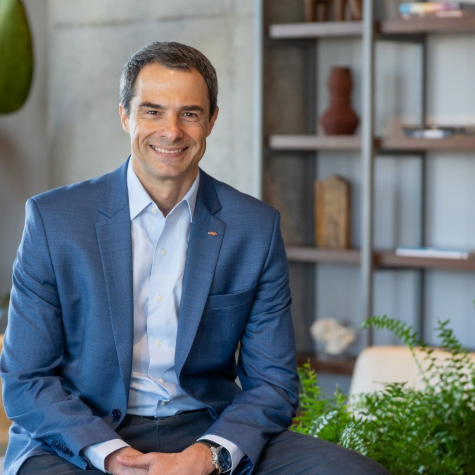

José Luiz Costa
CX & Conversational AI
Inovação com foco na experiência do cliente. 20+ anos construindo atendimento que cresce sem perder a relação — América Latina.

Sobre
Penso em voz alta sobre experiência do cliente e tecnologia.
Sou executivo de Customer Experience e Serviços Profissionais na América Latina, hoje Diretor Regional na Avaya — reporto ao VP de Serviços das Américas e lidero um time de 80+ pessoas e uma unidade de negócio de US$ 10M+ (Caribe e Latam). Ao longo de 20+ anos, transformei feedback do cliente em estratégia operacional, construí times multiculturais (AR, BR, CO, MX) e conduzi transformações de entrega que melhoraram margem, NPS e renovação. Meu foco atual é IA conversacional aplicada ao CX — sistemas que aprendem com cada interação e ficam mais resilientes a cada falha. Escrevo resumos visuais de papers e ensaios próprios para organizar e compartilhar essas ideias.
Contato
Para oportunidades, colaborações ou só para trocar ideias sobre CX e IA conversacional — o LinkedIn é o caminho mais rápido.